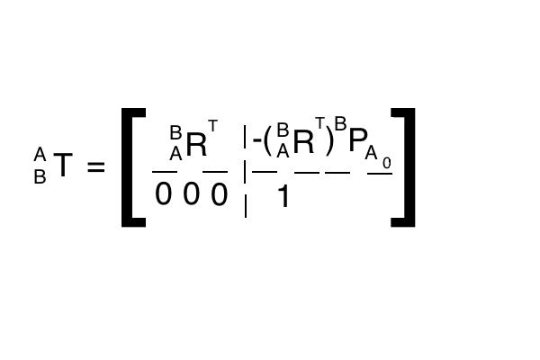

=
Taught by: Dr. Carl Crane
Taken: FS 2015
Text: Kinematic Analysis of Robot Manipulators
by: C. Crane and J. Duffy
Rotation Matrix and Example
- Consider two coordinate systems A and B and point 1 where
are given values and you need to find the location of point 1 defined in the A coordinate system (
)
- Breaking
into its component gives
- The vector from the origin of the B system to the point 1 can be defined in the A coordinate system as follows:
or
- Vector
=
![^{A}\underline{P}_{B_{0}} + \left[ ^{A}\underline{x}_{B}, ^{A}\underline{y}_{B}, ^{A}\underline{z}_{B} \right] \left[ b_{1} \\ b_{2} \\ b_{3} \right]](http://chart.apis.google.com/chart?cht=tx&chl=%5E%7BA%7D%5Cunderline%7BP%7D_%7BB_%7B0%7D%7D%20%2B%20%5Cleft%5B%20%5E%7BA%7D%5Cunderline%7Bx%7D_%7BB%7D%2C%20%5E%7BA%7D%5Cunderline%7By%7D_%7BB%7D%2C%20%5E%7BA%7D%5Cunderline%7Bz%7D_%7BB%7D%20%5Cright%5D%20%5Cleft%5B%20b_%7B1%7D%20%5C%5C%20b_%7B2%7D%20%5C%5C%20b_%7B3%7D%20%5Cright%5D "^{A}\underline{P}_{B_{0}} + \left[ ^{A}\underline{x}_{B}, ^{A}\underline{y}_{B}, ^{A}\underline{z}_{B} \right] \left[ b_{1} \\ b_{2} \\ b_{3} \right]")
- If we then define
where
is the 3x3 rotation matrix from system B to system A we can further simplify the previous result to
- To reverse the direction of a rotation matrix simply take the transpose of the original matrix (
)
- This is saying that
Transformation Matrix
- Coordinate system transformations with rotation matrices can be further simpified by using homogenous coordinates and defining a transformation matrix as
- The coordinate transformation can then be re-written from
to
- It is desired to reverse the direction of a transformation matrix (from
to
)
- Start with the given transformation matrix we have knowledge of
- For the new matrix we will need
and
- It is known from the properties of rotation matrices as shown above that the rotation matrix in the reverse transforming direction is the transpose of the original rotation matrix
- The general equation for transforming a point (1) from coordinate system A to B is
- Taking the above equation and using it to find coordinate system B's origin as seen from the A system gives the following equation
where

- Now solving for the desired
gives
or
- Now the unknowns are in terms of the known values and the new transformation matrix can be written in the form shown above
|  |
Rotation Around a General Vector Passing Through the Origin
- The rotation matrix for a rotation,
, around a general vector,
, passing through the origin is:

|
- Where
,
and
Formula Derivation
- It is desired to find the rotation matrix from coordinate system A to coordinate system B after a rotation
- To begin consider a coordinate system C whose z-axis is along the vector
- The rotation matrix from C to A can then be defined as
- Now consider coordinate system D which is obtained by rotating coordinate system C about its z-axis by
- The rotation matrix from D to C would then be defined as
- Taking note that coordinate system B will have the same relation to coordinate system D as coordinate system C has to coordinate system A, the relation
exists
- The desired rotation matrix can now be found by a series of matrix multiplications:

|
- Unfortunately we do not have values for
or
and
because we chose the x and y axes for coordinate system C arbitrarily and so we will need to find a way to cancel them out of the resultant matrix
- In order to simplify the terms in the rotation matrix
- First each row in a rotation matrix represents a unit vector and so the dot product of one of the rows with itself equals one (using matrix
)
- This rule should simplify all of the terms along the diagonal of rotation matrix
or
- The second geometric meaning of the rotation matrix that is going to be utilized is that all of the rows in the matrix represent vectors that are orthogonal to one another and therefore their dot product will equal zero
- The last geometric meaning of the rotation matrix that we are going to use is that the columns of the matrix represent vectors chosen using the right hand rule and therefore the cross product of the first two columns equals the third column
\hat{\imath} + (a_{x}b_{z}-a_{z}b_{x})\hat{\jmath} + (a_{x}b_{y}-a_{y}b_{x})\hat{k}")
- Using the second two rules the formula for the rest of rotation matrix
Common Rotations
- Rotation
around the x-axis:
- Rotation
around the y-axis:
- Rotation
around the z-axis:
Find Vector and Rotation Angle from the Rotation Matrix
- For the rotation matrix about a general vector passing through the origin, using the notation
- Adding all of the elements in the diagonal gives
where vector
is a unit vector (
)
- To find the values of the vector m use the equation of the form
for
and

- This simplifies to
- Example
- Exception is

|
Standard Link Coordinate Systems
- The standard link coordinate system for link ij has its origin at the intersection of
and
, it's x-axis along the vector
- The y-axis is determined using the right hand rule
- Figure taken from lecture powerpoint
Revolute Joint, R
- Revolute joints only allow rotation between the links (1 degree of freedom)
- Joint offset distance is fixed and joint angle is variable

|
Prismatic Joint, P
- Prismatic joints only allow translation between the links (1 degree of freedom)
- Joint offset distance is variable and joint angle is fixed

|
Cylindrical Joint, C
- Cylindrical joints allow translation and rotation between joints (2 degrees of freedom)
- Joint offset distance is variable and joint angle is variable
Screw Joint, H
- Screw joints allow translation and rotation (1 degrees of freedom bc the two variables are not independent)
- Both the joint offset distance and joint angle are variable but they are not independent of one another

|
Plane Joint, E
- Plane joints allow 2 degrees of translation and one degree of rotation (3 degrees of freedom)
- To make plane joints easier to analyze they are simplified to two prismatic joints and a revolute joint
Hook Joint, T
- Hook joints allow rotation around two axes (2 degrees of freedom)
- A simplified view of hook joints is that it's a combination of two revolute joints
- For a hook joint
and

|
Spherical Joint, S
- A spherical joint allows rotation about all three axes (3 degrees of freedom)
- For analysis purposes spherical joints are replaced by three revolute joints
- With spherical joints the
,
and
intersect resulting in
Standard Fixed Coordinate System
- The standard fixed coordinate system is used to define the location and orientation of the first link relative to the ground which in turn defines the rest of the links
- The origin of the standard fixed coordinate system is at the intersection of
and
- The z-axis of the standard fixed coordinate system (
) points along
- The angle from
to
is labeled
instead of
General Link to Link Transformation Matrix Derivation
Iterative Technique
- For a standard 6 link robot with all revolute joints, the transformation matrix relating the fixed coordinate system to the last link can be found by the series of matrix multiplications:

- Each transformation matrix corresponds to a specific variable joint angle (
)
- The iterative technique consists of making a guess as to the variable joint angles then using forward analysis to find a
matrix then that matrix is compared with the desired
- Based on the comparison the guesses for the variable joint angles are adjusted and the process is repeated
- This process can be optimized using an objective function
- The iterative technique is not a very direct process for doing analysis and so this will not be the prefered technique for the class
Hypothetical Link Technique
- This technique consists of adding a hypothetical link to the kinematic chain that connects the last link (link 6) to the ground to make the chain a closed loop resulting in only 1 degree of freedom for the chain
- For the new hypothetical link 7 we will need values for
and
which we will be free to choose
- Convenient to choose
and
because then
- This set up leaves three angles and three distances that need to be solved:
,
,
,
,
and
- All vectors mentioned in the following process are unit vectors
- The first step in solving for the unknowns is using the definition of dot product with vectors
and
to find
 = cos(\alpha_{71})")
- Keeping in mind that
and
are unit vectors therefore thier magnitudes are one
- If
- The next step is to determine the
vector and this can be accomplished by taking the cross product of the
- Now using the properties of dot products and cross products

- Both dot product and cross product definitions are needed because individually
and
give two different answers but when compared together only one answer emerges
- Now that the three unknown angles and the direction of vector
- To find these distances we will use the vector loop equation for the following closed loop:
- Technically this is a series of 3 equations with 3 unknowns and therefore can be solved as is, however, this class includes a derivation of an equation for each unknown
- To begin the derivation for an expression for
 + S_{7} (^{F}\underline{S}_{7} \times ^{F}\underline{S}_{1})")
- Note that the vector
- Also note that
is equivalent to
by definition of how we set up the vectors
- Now take the dot product of each remaining term of the expression with the vector
 \cdot ^{F}\underline{a}_{71} + S_{7}sin(\alpha_{71})(^{F}\underline{a}_{71}")
- First take note that when the dot product of the vector
- Next take note that the cross product between
- The final expression is then only in terms of known values and can be rearranged to solve for
- The same process is followed to find the other two unknown lengths and the resulting expression are as follows
Special Case 1:
- As mentioned above, problems are encountered when
- The first step to solving special case one is to set
)
- The vector loop equation from above therefore simplifies to the following expression
- Now take the dot product of each term in the vector loop equation with vector
- The vectors
- The dot product of vector
- Simplifying the above expression for the length
- Now we rearrange the vector loop equation so that the
- From the expression the length can be found by recognizing that it represents the magnitude of the left hand side of the equation
- If
then problems arise and the process has to move to special case 2
- Using the same expression above where the
- Now the same series of sin and cos equations as the normal case can be used to find the remaining angles
Special Case 2:
- If
then we set
- This makes
- The remaining value to find is the angle
- The hypothetical link technique including the special cases can be summarized in the following flow chart taken from the lecture slides
Create Equivalent Spherical Mechanism
- The first step to creating an equivalent spherical mechanism from a closed loop spatial mechanism is to take all of the
vectors and give them the same origin point
- Now simply draw links lying on a sphere centered at the origin to hold the twist angles (
- Prismatic joints become a revolute joint with a fixed joint angle
Spherical Mechanism Groups
- The mobility of the spatial closed loop mechanism is 1 by definition and there are different categories of spherical mechanisms depending on what is their resultant mobility
- The mobility of spherical mechanisms can be defined as
- Spherical mechanism groups are defined by their mobility
- Ex. Group 1 spherical mechanisms have
- Only goes up to group 4 because you end up with limitations on the ability to create a closed loop spatial mechanism with a mobility of one
- The spherical mechanism gets more difficult to solve for higher mobility in the mechanism (larger group number)
Find
- The first vector is already defined based on how we defined the standard coordinate systems
Find
- To find the direction of vector
in the first coordinate system we will use the rotation matrix that can be pulled from the transformation matrix derived in the forward analysis section

- Using the rotation matrix the vector

![\left[ \begin{array} c_{2} & -s_{2} & 0 \\ s_{2}c_{12} & c_{2}c_{12} & -s_{12} \\ s_{2}s_{12} & c_{2}s_{12} & c_{12} \end{array} \right]](http://chart.apis.google.com/chart?cht=tx&chl=%5Cleft%5B%20%20%5Cbegin%7Barray%7D%20c_%7B2%7D%20%26%20-s_%7B2%7D%20%26%200%20%5C%5C%20s_%7B2%7Dc_%7B12%7D%20%26%20c_%7B2%7Dc_%7B12%7D%20%26%20%20-s_%7B12%7D%20%5C%5C%20s_%7B2%7Ds_%7B12%7D%20%26%20c_%7B2%7Ds_%7B12%7D%20%26%20c_%7B12%7D%20%5Cend%7Barray%7D%20%5Cright%5D "\left[ \begin{array} c_{2} & -s_{2} & 0 \\ s_{2}c_{12} & c_{2}c_{12} & -s_{12} \\ s_{2}s_{12} & c_{2}s_{12} & c_{12} \end{array} \right]")
![\left[ 0 \\ 0 \\ 1 \right]](http://chart.apis.google.com/chart?cht=tx&chl=%5Cleft%5B%200%20%5C%5C%200%20%5C%5C%201%20%5Cright%5D "\left[ 0 \\ 0 \\ 1 \right]")
Find
- To find the orientation of the
vector in the first coordinate system we can use the expression
- Note however that
should give the same result vector as
with the indices increased by one

- When that vector is multiplied by
matrix the following vector is the result

Single Subscript Notation
- As can be imagined the result of the further vectors will become increasingly complicated and so a short hand notation has been developed to simplify the expressions
- For single subscript notation three different terms are created (
,
,
) and will have different meanings based on their subscript and whether or not they have a bar
- For
the single subscript notation will involve
and
and the order of the
- For no bar
- Notice
- With bar
- Notice
- The subscript in single subscript notation indicates which theta is included in its terms
Rewrite
- With the formation of single subscript notation notice that the vector
can be rewritten as the following
Find
- The dirction of the vector
in the first coordinate system can be found by the multiplication of the series of rotation matrices
- Note that by similarity the expression for
in the first coordinate system with subscripts increased by one

- When
is multiplied by the rotation matrix to transition to the first coordinate system the following expression emerges

Multi-Subscript Notation
- Just like before a new notation is going to be introduced in order to make keeping track of the multitude of terms easier
- The general form for multiple notation is presented below
- In the above expressions the subscript a represents all but the last of the subscripts for that variable and b represents the last subscript
- Ex.
a = 43, b = 2
- Ex. 2.
a = 234, b = 5
- The subscript
means that the subscript will be
and what ever the next number will be in the order of the subscripts whether that be ascending or descending
- Ex.
- Ex. 2.
- For double subscript notation the order
means the
means that they will have bars, where
Rewrite
- The term
can be simplified with the newly defined multisubscript notation to the following

Find
,
and
- Now that multi-subscript notation has been developed it is simple to represent the rest of the
vectors in the first coordinate system


Find
- The vector
is already defined by how we set up the standard coordinate systems

Find
- To find the orientation of the
in the first coordinate system we will use a the rotation matrix
- We can now find the desired vector in the first coordinate system

Find
- For the next a vector we can begin by noticing that rotating the
vector to the second coordinate system will have the same result as the last vector with all of the subscripts increased by one

- Now the rotation matrix will be used to find the orientation of the vector in the first coordinate system just like in the pervious case
^{2}\underline{a}_{34} =")
Double Subscript Notation for
Terms
- Looking at the result vector
one would notice a similarity between it and the short hand notation used for the
- We will begin with the definitions for the new notation
- Where
does not have to be smaller than
, it just represents the order of the subscripts
- The subscripts now represent the alpha contained by the notation instead of the theta like the previous notation
Rewrite
- Using the newly defined notation the vector

![\left[ \begin{array} W_{32} \\ -(U_{32}s_{12} + V_{32}c_{12}) \\ U_{32}c_{12} - V_{32}s_{12} \end{array} \right]](http://chart.apis.google.com/chart?cht=tx&chl=%5Cleft%5B%20%5Cbegin%7Barray%7D%20W_%7B32%7D%20%5C%5C%20%20-%28U_%7B32%7Ds_%7B12%7D%20%2B%20V_%7B32%7Dc_%7B12%7D%29%20%5C%5C%20U_%7B32%7Dc_%7B12%7D%20-%20V_%7B32%7Ds_%7B12%7D%20%20%5Cend%7Barray%7D%20%5Cright%5D "\left[ \begin{array} W_{32} \\ -(U_{32}s_{12} + V_{32}c_{12}) \\ U_{32}c_{12} - V_{32}s_{12} \end{array} \right]")
Rewrite
Through
- Rather than go through the process of defining the rest of the
vectors individually we note that they all follow the format of the above


Spherical Mechanism Equation Toolkit
- The next thing to do is to find expressions for each of the
- For each configuration the
- Note that each of these equations will be different for each spherical mechanism configuration (spherical quadralateral tools
spherical hexagon tools)
Example results
- For a spherical triangle
- This process results in lots of equations and for brevity sake they will not be listed here. If needing the equations they are listed out in full in the appendix of the textbook
Solve
- Problems of this form develop when attempting to solve group 1 spherical mechanisms
- Two different methods were discussed in class where one is the "better" method
Tan-Half Angle Method
- This method begins using the tangent half angle trig identity
- Substituting these values into the original problem results in the following expression
 + B")
- After multiplying through by
and regrouping by the x terms the following quadratic equation emerges
- The quadratic formula can now be used to solve for x which can in turn be used to solve for
- Potential problem points for this solution process are as follows:
- The term under the radical can be negative leading to non-real solutions
- This is a symptom of not having a feasible link configuration and not necessarily a problem with the solution method itself
- There could be a divide by zero error if

- This is an issue with the solution method and not the mechanism itself
Trig Solution Method
- The second solution approach involves a few trig identities in its derivation
- The first step in the process is to divide each term in the equation by the root of

- Now we note that the sum of the first two coefficients squared is equivalent to one due to the fact that it is adding together the components of the denominator
- The next step is to turn the above fractions into sine and cosine by keeping in mind the following trig identity
- We can therefore rewrite the fractions as follows
- These definitions are used to determine the value of angle
- Using these new terms the original equation can be rewritten as follows
- Note that the angle
- By moving the non-trig term to the other side of the equation the remaining trig terms form the difference between two angles identity
- Now arccosine can be used to determine what the difference in the two angles are
Spherical Pentagon Example
Form System of Two Equations
Projection of Vector Loop Equation
Self-Scalar Product of Vector Loop Equation
Secondary Cosine Laws
Dual Numbers
Dual Angles
Solve
}")
}")
Sylvester's Method
Bezout's Method